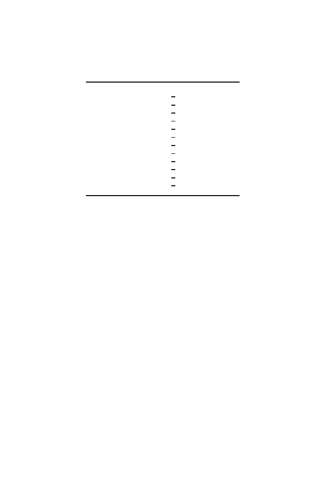

9.2 Representing Signals in DNA: Independent Positions
231
Table 9.1.
Binding sites for lambda
cro
protein at operators in the
c
I region of
bacteriophage lambda (Gussin et al., 1983). Underlined base pairs separate each site
into two half-sites.
O
L
1
5
-
T A T C A C C G C C A G T G G T A
-3
3
-
A T A G T G G C G G T C A C C A T
-5
O
R
1
5
-
T A T C A C C G C C A G A G G T A
-3
3
-
A T A G T G G C G G T C T C C A T
-5
O
L
2
5
-
T A T C T C T G G C G G T G T T G
-3
3
-
A T A G A G A C C G C C A C A A C
-5
O
R
2
5
-
T A A C A C C G T G C G T G T T G
-3
3
-
A T T G T G G C A C G C A C A A C
-5
O
L
3
5
-
T A T C A C C G C A G A T G G T T
-3
3
-
A T A G T G G C G T C T A C C A A
-5
O
R
3
5
-
T A T C A C C G C A A G G G A T A
-3
3
-
A T A G T G G C G T T C C C T A T
-5
an extensive illustration of this in Section 3.6. In that case, we expected there
to be signals in the regions immediately upstream of the 5
end of transcribed
gene regions, but we did not specify what they were. Also, we did not require
that the signals be present in all members of the set. We were able to identify
over-represented
k
-words such as
TAAT
and
ATAA
that are contained within
TATAAT
(
−
10 region) without alignment or experimental specification of the
signal. Unsupervised methods have been used to identify
k
-words represent-
ing both known and previously unrecognized regulatory sequences for yeast
genes (Brazma et al., 1998; van Helden et al., 1998). A statistical approach
devised by Bussemaker et al. (2000) can be used to generate a
k
-word dictio-
nary of regulatory sites or other significant motifs. Unsupervised methods are
not discussed further here, but see Section 14.4.3.
Another approach,
supervised
learning, includes prior knowledge of the
pattern to be found. For example, multiple instances of a known and aligned
DNA signal can be used to define parameters of probabilistic models describ-
ing that signal. This is the subject of the remainder of this chapter.
9.2 Representing Signals in DNA: Independent Positions
There are several ways of representing signals in DNA, ranging from very
simple to rather complex. The simplest method of representing a binding site
is as a
consensus sequence
—a string of characters corresponding to the
most common occurrences of bases at each position. This is adequate for sites
such as restriction endonuclease recognition sequences and reasonably good
for sites such as GRE half-sites (examples aligned below).